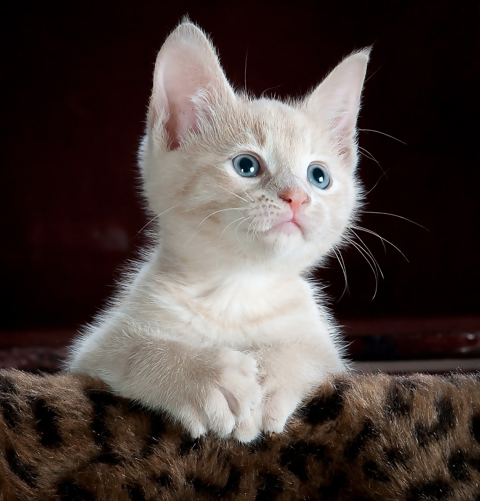
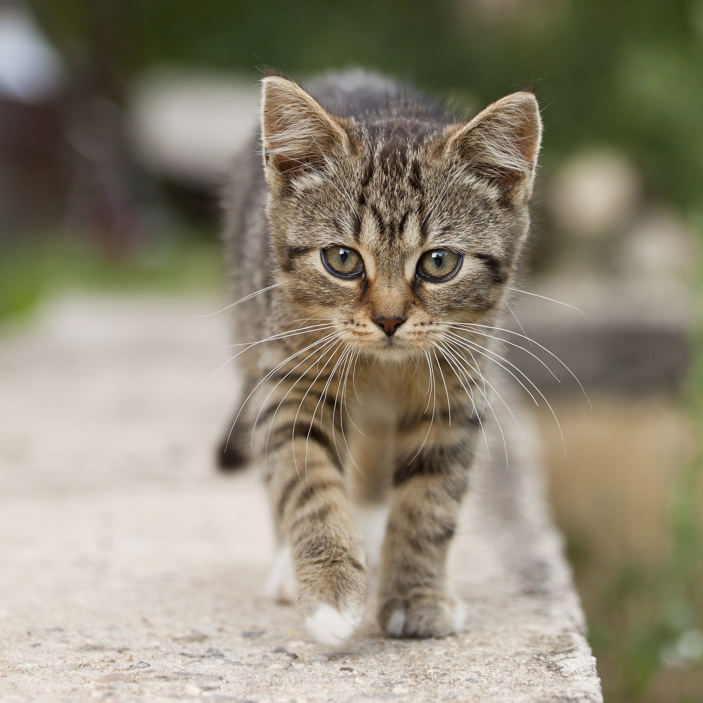
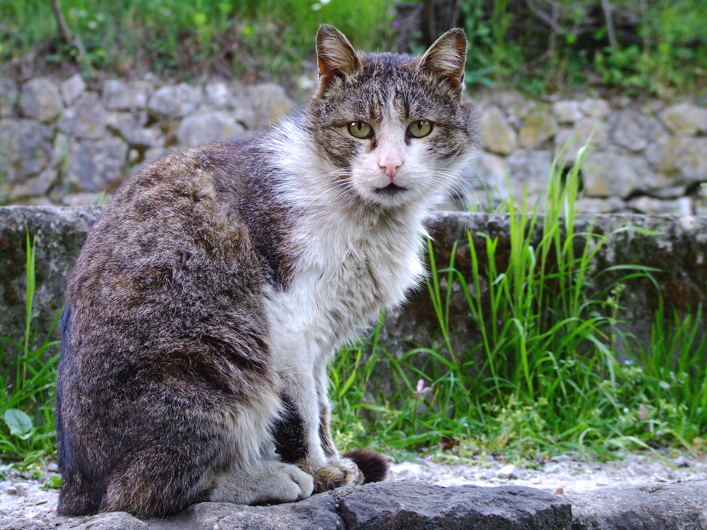
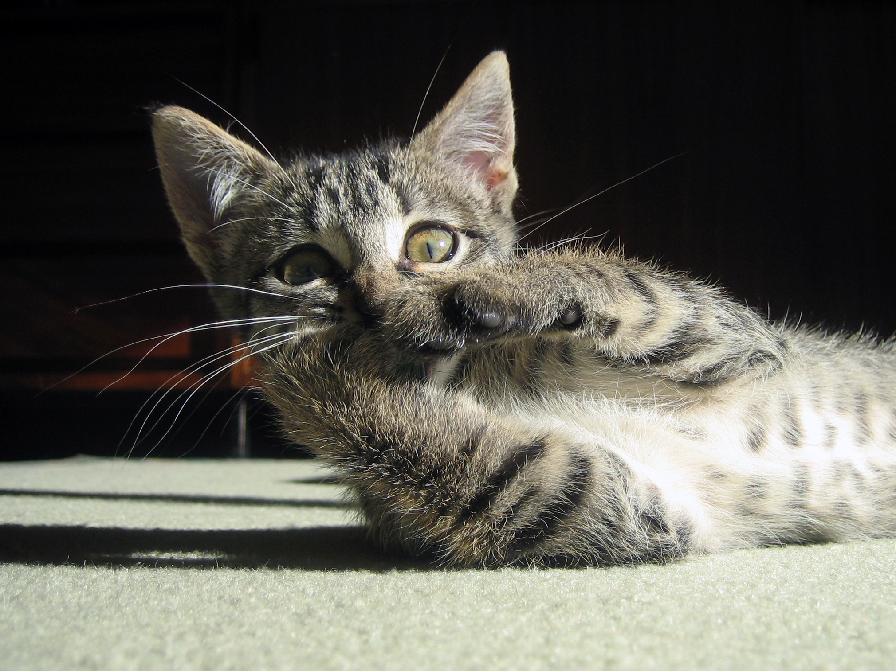
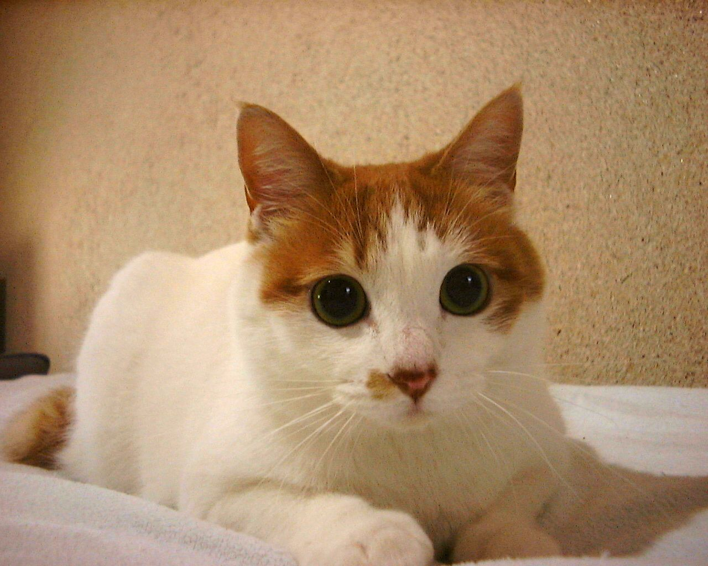
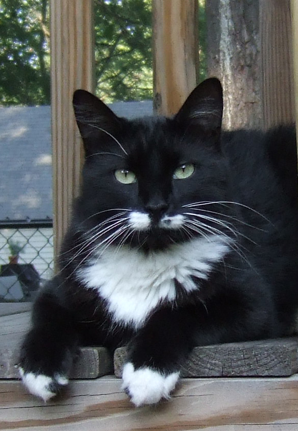
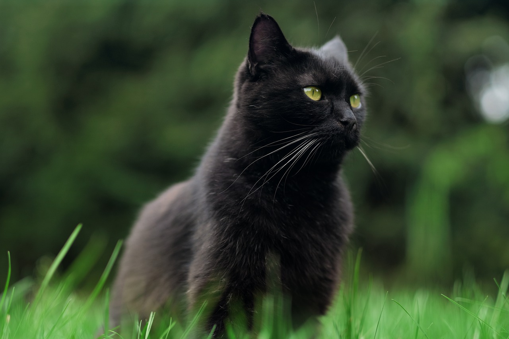
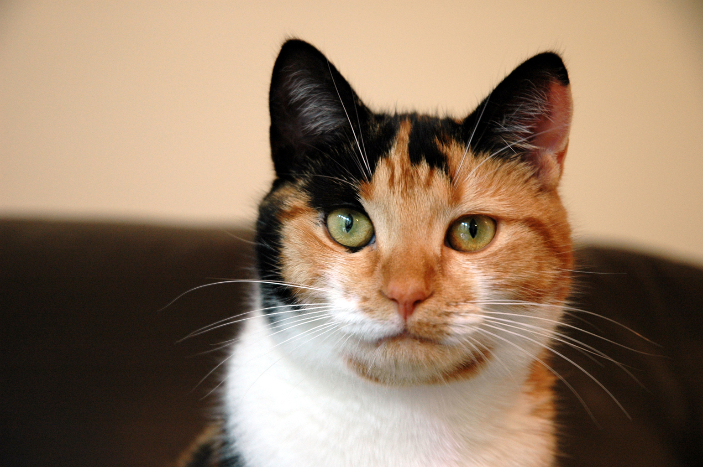
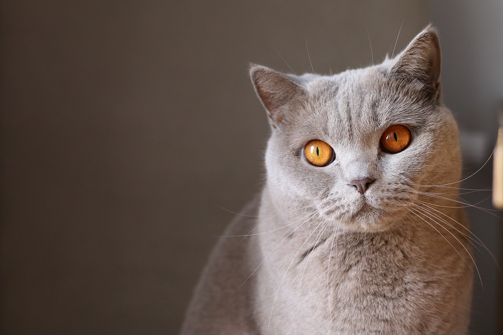

Cats available for adoption

Name: Neo
Age: 5 months
Gender: Male
Neutered: Yes
Personality: He is initially a bit shy, but once he is certain about his
environment there is no end to his playfulness. He is a very healthy and active little guy.
He plays with every toy we offer him. He likes sleeping with a warm human body at night,
preferably close to your feet.
Special needs: not applicable

Name: Gandalf
Age: 7 months
Gender: Male
Neutered: Yes
Personality: This is a very curious kitten. He wants to know everything
about anything! If he hears a noise, it must be inspected. He loves chasing bugs and
watching birds. He enjoys watching humans brush their teeth, comb their hair, shower, bathe,
cook, clean.
Special needs: not applicable

Name: Dumbledore
Age: 16 years
Gender: Male
Neutered: Yes
Personality: He is a very sweet cat and loves to cuddle as close as he
possibly can get to you. That might be in your arm, on your lap, lying on your chest with
his head in your neck. He is a first class snuggle bug.
Special needs: Yes, he has a special diet for treatment of his IBD. He also
receives vitamin B injections every 14 days and an appetite stimulant from time to time. Due
to his age and health challenges we will only consider applicants that have no small
children, no other animals and is comfortable with giving a cat medication. He needs a lot
of love and attention. He shared a home with an elderly gentleman that rescued Dumbledore as
a kitten. His human recently passed away.

Name: Gaia
Age: 7 months
Gender: Female
Neutered: Yes
Personality: She likes being in your vicinity, but on her own terms. At
this stage her life revolves around playing with crinkle balls, launching surprise attacks
on human ankles, feet and hands. She plays until she flops down to take a power nap. A few
minutes later she will be back to chasing down human toes, ankles and whatever else tickles
her fancy in the moment.
Special needs: not applicable

Name: Skyelah
Age: 5 years
Gender: Female
Neutered: Yes
Personality: She is a skittish little girl. She is sweet and gentle. She
was surrendered by a family that adopted her as a kitten, but could no longer provide for
her. We suspect that she has been through some trauma and noticed that she is petrified of
dogs, even if they are small and friendly. She likes a quiet home, soft warm beds that are
high from the ground, such at the top of a cat tower. If you are patient with her, she will
start purring and rubbing against your hand.
Special needs: Due to her nervousness, we will only consider applications
if there are no dogs in the home and if there are other cats, they would need to be very
gentle towards Skyelah.

Name: Halifax
Age: 4 years
Gender: Male
Neutered: Yes
Personality: He is a loving boy that gets along with humans, other cats,
dogs and maybe even a bird or two. He will be great in a home with children and other
animals. He will ask you for food and pets and when he feels like it, he will just wander
off and entertain himself. He also loves being in the vicinity of people and other animals.
If you pick him up, he will make himself comfortable on your lap or just drape himself over
your
shoulder. His human recently emigrated to New York and did not want to put him through the
emigration process and then leave him alone in an apartment during the day.
Special needs: not applicable

Name: Morpheus
Age: 3 years
Gender: Male
Neutered: Yes
Personality: He is adventurous. He likes going for walks while on his
leash, he sits in his cat basket in the front of a bicycle and watches the world go by, he
enjoys going to parks and watching people strecth out on their blankets. He will walk up to
strangers and start talking his own cat language, however it is clear that he wants
attention and maybe a good conversation.
He guards the front door of his home, and he is always willing to greet any visitors. He
evens seems disappointed if there is a delivery at the front door, and he does not get the
pleasure of a decent greeting.
Special needs: not applicable

Name: Ginny
Age: 1 year and maybe a few months
Gender: Female
Neutered: Yes
Personality: She was found wandering in a holiday park. Not much is known
about her start in life, but she seems to be a confident girl. She likes people and animals.
She does not mind where she sleeps, if she is tired she just snuggles anywhere. If you call
her she will stand closer for some headrubs, but if you ignore her she keeps busy with her
own cat things. We do believe she deserves to be spoiled a bit and will fit into just about
any household where a sweet cat is wanted.
Special needs: not applicable

Name: Luna
Age: 2 years
Gender: Female
Neutered: Yes
Personality: A gentle and friendly girl. She likes napping in the sun,
watching birds and chasing bugs, as long as they are not in a hurry to get away from her.
She
is very enthusiastic about anything that happens on a kitchen counter.
We think she wanted to be a chef. Her human left due to Brexit. She preferred to stay on
this side of water.
Special needs: Not so much a special need, but just take care of the amount
of food she has access to as she really likes eating and risks weight gain. If there are
other animals in the home, she will eat their food at the first opportunity she gets.